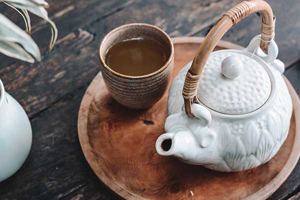

Rumah Produksi 10
Kecamatan Besuki
Data profil ini masih berupa penempatan sementara. Nama usaha, nama pemilik, nomor WhatsApp, lokasi, dan foto akan diisi setelah wawancara lapangan selesai dan pemilik usaha memberikan persetujuan untuk dipublikasikan.
Tentang usaha
Profil Rumah Produksi 10 sedang dilengkapi. Cerita usaha akan ditampilkan setelah wawancara dengan pemilik selesai dan pemilik menyetujui isinya dipublikasikan.
Ketersediaan produk menyesuaikan proses produksi dan bahan baku. Silakan hubungi produsen melalui WhatsApp untuk mengetahui ketersediaan terbaru.
- Nama usaha
- Rumah Produksi 10
- Pemilik
- Belum tersedia
- Mulai usaha
- Belum tersedia
- Lokasi
- Belum tersedia
- Sistem pembelian
- Belum tersedia
- Pemesanan
- Belum tersedia
Produk kerupuk
Daftar produk akan ditampilkan setelah dikonfirmasi langsung kepada pemilik usaha. Untuk sementara, silakan tanyakan jenis kerupuk yang tersedia melalui WhatsApp.
Dokumentasi



Foto pada halaman ini masih menggunakan gambar bawaan template dan akan diganti dengan dokumentasi asli rumah produksi.
Tanyakan ketersediaan hari ini
Produksi berjalan menyesuaikan bahan baku, jadi cara paling pasti adalah bertanya langsung kepada produsen.